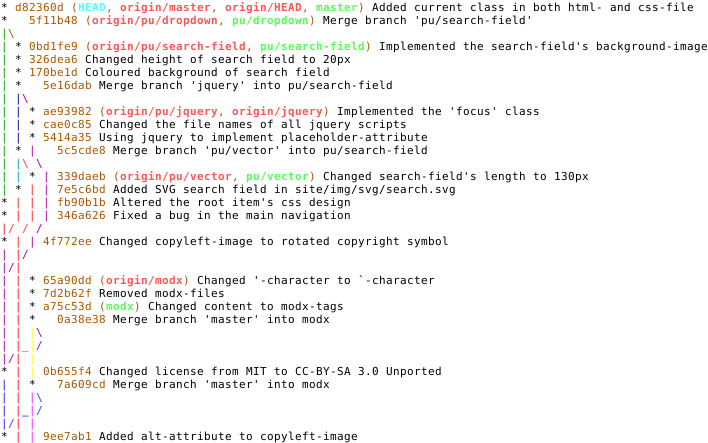

git merge & (git log)¶
[dion@localhost repo_een]$ git branch
master
* vraag_zip
[dion@localhost repo_een]$ cat show_dir.sh
#!/bin/bash
echo "Dit is de directory:"
ls -lahi
while true; do
read -p "Deze folder gzippen? [j/n]" jn
case $jn in
[j]* ) tar -cvzf dir_archief . ; exit;;
[n]* ) exit ;;
* ) echo "Graag 'j' of 'n' gebruiken...";;
esac
done
[dion@localhost repo_een]$ git checkout master
Switched to branch 'master'
[dion@localhost repo_een]$ git branch
* master
vraag_zip
[dion@localhost repo_een]$ cat show_dir.sh
#!/bin/bash
echo "Dit is de directory:"
ls -lahi
We gaan nu terug naar de branch ‘vraag_zip’. Als we vanuit hier een ‘git merge master’ doen dan bedoelen we daarmee dat we alle wijzigingen van ‘master’ willen samenvoegen met de branch waarin we nu zitten. Aangezien er geen wijzigingen in ‘maaster’ zijn geweest valt er niks te mergen.
[dion@localhost repo_een]$ git checkout vraag_zip
Switched to branch 'vraag_zip'
[dion@localhost repo_een]$ git merge master
Already up-to-date.
Als we nu terug gaan naar ‘master’ en vanuit daar een ‘git merge vraag_zip’, dan neemt ‘master’ alle wijzigingen van de branch ‘vraag_zip’ mee.
Switched to branch 'master'
[dion@localhost repo_een]$ git merge vraag_zip
Updating 349bf47..4ce38c9
Fast-forward
show_dir.sh | 9 +++++++++
1 file changed, 9 insertions(+)
[dion@localhost repo_een]$ cat show_dir.sh
#!/bin/bash
echo "Dit is de directory:"
ls -lahi
while true; do
read -p "Deze folder gzippen? [j/n]" jn
case $jn in
[j]* ) tar -cvzf dir_archief . ; exit;;
[n]* ) exit ;;
* ) echo "Graag 'j' of 'n' gebruiken...";;
esac
done
[dion@localhost repo_een]$ git checkout master
Switched to branch 'master'
[dion@localhost repo_een]$ git merge vraag_zip
Updating 349bf47..4ce38c9
Fast-forward
show_dir.sh | 9 +++++++++
1 file changed, 9 insertions(+)
[dion@localhost repo_een]$ cat show_dir.sh
#!/bin/bash
echo "Dit is de directory:"
ls -lahi
while true; do
read -p "Deze folder gzippen? [j/n]" jn
case $jn in
[j]* ) tar -cvzf dir_archief . ; exit;;
[n]* ) exit ;;
* ) echo "Graag 'j' of 'n' gebruiken...";;
esac
done
Zoals je weet kan je met ‘git log’ de history zien. Er zijn wat opties voor ‘git log’ die handig kunnen zijn, waarbij:
| - -oneline | zet de commit op een lijn |
| - -decorate | laat ook de head en de branch zien |
| - -graph | maak |
[dion@localhost repo_een]$ git log
commit 4ce38c95761aa587f00c359fa7fccc6cda64bea0
Author: Dion H.J. Dresschers <d.h.j.dresschers@hva.nl>
Date: Tue Mar 17 08:49:54 2015 -0400
Script uitgebreid met gzip mogelijkheid
commit 349bf475ecce786e90e6432bc1fd32c142d8ca37
Author: Dion Dresschers <dion@localhost.localdomain>
Date: Fri Mar 13 08:46:07 2015 -0400
Ook human-readible en inodes toegevoegd
commit e0d1981c46c1e25eb99379f1387e12f3dab0fffa
Author: Dion Dresschers <dion@localhost.localdomain>
Date: Fri Mar 13 06:47:55 2015 -0400
Nieuw bash script gemaakt
[dion@localhost repo_een]$ git log
commit 4ce38c95761aa587f00c359fa7fccc6cda64bea0
Author: Dion H.J. Dresschers <d.h.j.dresschers@hva.nl>
Date: Tue Mar 17 08:49:54 2015 -0400
Script uitgebreid met gzip mogelijkheid
commit 349bf475ecce786e90e6432bc1fd32c142d8ca37
Author: Dion Dresschers <dion@localhost.localdomain>
Date: Fri Mar 13 08:46:07 2015 -0400
Ook human-readible en inodes toegevoegd
commit e0d1981c46c1e25eb99379f1387e12f3dab0fffa
Author: Dion Dresschers <dion@localhost.localdomain>
Date: Fri Mar 13 06:47:55 2015 -0400
Nieuw bash script gemaakt
[dion@localhost repo_een]$ git log --oneline
4ce38c9 Script uitgebreid met gzip mogelijkheid
349bf47 Ook human-readible en inodes toegevoegd
e0d1981 Nieuw bash script gemaakt
[dion@localhost repo_een]$ git log --oneline --decorate
4ce38c9 (HEAD, vraag_zip, master) Script uitgebreid met gzip mogelijkheid
349bf47 Ook human-readible en inodes toegevoegd
e0d1981 Nieuw bash script gemaakt
[dion@localhost repo_een]$ git log --oneline --decorate --graph
* 4ce38c9 (HEAD, vraag_zip, master) Script uitgebreid met gzip mogelijkheid
* 349bf47 Ook human-readible en inodes toegevoegd
* e0d1981 Nieuw bash script gemaakt
Met ‘man git log’ kan je de manual van de git logging. Bij complexere repo’s waarmeerdere mensen in verschillende branches werken kan dit een mooi beeld opgeven.
[dion@localhost repo_een]$ git log --oneline --graph --decorate=full
* 4ce38c9 (HEAD, refs/heads/vraag_zip, refs/heads/master) Script uitgebreid met gzip mogelijkheid
* 349bf47 Ook human-readible en inodes toegevoegd
* e0d1981 Nieuw bash script gemaakt
Je kan zien dat bovenstaand voor een aardig lange commandoregel kan zorgen.
Je kan hier een git alias maken.bijvoorbeeld ‘lola’:
[dion@localhost repo_een]$ git lola
git 'lola' is not a git command. See 'git --help'.
[dion@localhost repo_een]$ git config --global alias.lola '!git log --graph --decorate --pretty=oneline --abbrev-commit --all'
Je kan ook voor het overzicht ook wat kleurtjes toevegen in de config:
[dion@localhost repo_een]$ git config --global color.ui "auto"
[dion@localhost repo_een]$ cat ~/.gitconfig
[user]
name = Dion H.J. Dresschers
email = d.h.j.dresschers@hva.nl
[alias]
lola = !git log --graph --decorate --pretty=oneline --abbrev-commit --all
- [color]
- ui = auto